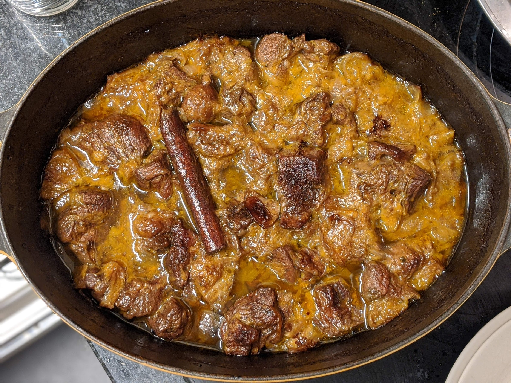

Ragoût d'agneau, oranges et marrons

Pour 5 personnes :
- Une cuillère à café de cannelle en poudre
- Une cuillère à café de cumin en poudre
- Une cuillère à café de coriandre en poudre
- Un bon kilo de gigot d'agneau maigre coupé en morceaux
- Un oignon
- Un bâton de cannelle
- 400g de marrons précuits
- 200ml de jus d'orange frais
- Un litre de bouillon d'agneau
- Deux oranges
- Un bouquet de coriandre
- Sel, poivre, huile d'olive
- Faire préchauffer le four à 160°C (thermostat 5-6). Mélanger les épices, le sel et le poivre dans un grand saladier, et enrober la viande dans le mélange. Faire revenir les morceaux de viande dans une grande cocotte allant au four ou dans une tagine, dans de l'huile d'olive chauffée à feu vif. Sortir la viande quand elle est dorée.
- Remettre un peu d'huile dans la cocotte, ajouter l'oignon haché et le bâton de cannelle, remuer pour que ça s'imprègne des sucs de viande. Éplucher et couper l'orange en morceaux, et les mettre dans la cocotte avec les marrons et le jus d'orange. Porter à ébullition.
- Remettre l'agneau dans la cocotte avec le bouillon, porter à ébullition, et laisser mijoter deux heures au four en vérifiant que ça ne se dessèche pas (sinon, rajouter de l'eau chaude).
- Ajouter la coriandre, mélanger, rectifier l'assaisonnement, et servir chaud avec de la semoule.